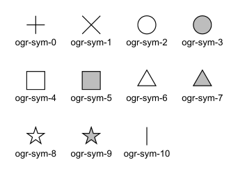
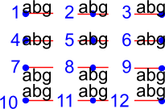

地物スタイル仕様
Version 0.016 - 2018-12-03
1. 概要
この文書は、GDALのベクタードライバ(OGR)のさまざまなレベルで、地物スタイル情報（色、線幅、シンボルなど）をどのように扱うかを定義します。
以下のGDALベクタードライバは、地物スタイルのサポートレベルが異なります。DWG (libopencad)、DWG (Teigha)、DXF、KML (libkml)、MapInfo、MicroStation DGN v7、DGN v8、OpenJUMP JML、PDF。
1.1 スタイルは地物オブジェクトのプロパティです
概念的に、地物スタイルは地物のプロパティとして見るべきです.一部のシステムはスタイル情報を特別な属性に格納していますが,GDALでは,地物のジオメトリと同じように,スタイルをプロパティとして見ることがより一貫しています.
これは,スタイルを持たない形式(例:E00)に書き込むときにスタイル情報を属性に格納することを妨げません.ただし,GDALを介してそのようなデータセットが開かれるときには,スタイル情報を含む属性の名前がメタデータに指定されているか,ユーザーによって指定されている必要があります.
また,SFCOMインターフェースでは,スタイル情報はジオメトリと同様に属性に格納されます.
1.2 地物スタイルは2つのレベルで保存できます
スタイルは地物の描画方法を定義しますが,同じスタイルを共有する複数の地物があることは非常に一般的です.そのような場合,各地物にスタイル情報を重複させる代わりに,スタイル情報を共有する効率的な方法を提供します.
スタイル情報が見つかる2つのレベルがあります:
A dataset can have a table of pre-defined styles that can then be referred to by the layers or by the individual features. The mechanism for that is defined further down in this document.
A feature (OGRFeature object) can have its own complete style definition. Alternatively, a feature can be linked to a style in the dataset's table of styles. This can save storage space when the same styles are reused often.
特定のデータセットで作業するときに,さまざまなレベルの1つ以上でスタイル情報を保存できるようにする必要があります.スタイルが実際に保存されるレベルは,取り扱うフォーマットに最も効率的なアプローチに依存します.
1.3 描画ツール
スタイル定義を構築するために使用される描画ツールの小さなセットを定義します:
PEN: For linear styles
BRUSH: For filling areas
SYMBOL: Point symbols
LABEL: For annotations
各描画ツールは,いくつかのパラメータを取ることができますが,すべてオプションです.スタイル構文は,すべての可能なパラメータをサポートできないシステムが,サポートしていないパラメータを安全にスキップして無視できるように構築されています.これにより,将来の仕様の拡張が容易になり,既存のコードやアプリケーションを壊すことなく行うことができます.
スタイルは単一のツールを使用することも,1つ以上のツールを組み合わせて使用することもできます.複数のツールをスタイルで組み合わせることで,ほぼすべての種類のグラフィカル表現を構築することができます.たとえば,SYMBOLツールは,線に沿って間隔を空けてシンボルを配置するために使用できます.また,LABELツールは,ポイントにテキストを配置したり,線に沿って伸ばしたりするために使用できます.さらに,PENツールとLABELツールを組み合わせて,線をテキストラベルのリーダーとして使用し,テキスト文字列を線の最後の頂点に描画することもできます.
もちろん,ほとんどのシステムはすべてをサポートすることはできません.しかし,ここでの意図は,スタイル仕様を強力で柔軟性があり,できるだけ少ない損失ですべての種類の形式がスタイル情報を交換できるようにすることです.
1.4 地物属性はスタイル定義で使用できます
場合によっては,スタイル定義が,スタイル自体のハードコードされた値の代わりに,地物の属性フィールドを参照することが有用な場合があります.
これには,テキスト角度,テキスト文字列などが含まれます.これらの値は各テキストラベルで変更されますが,各地物の属性で角度とテキスト文字列を検索すると,ラベルスタイルの残りをレイヤーレベルで共有できます.
スタイル文字列の構文は,任意のパラメータ値が定数値であるか,属性フィールドへのルックアップであるかを指定する方法を提供します.
1.5 ツールパラメータの単位
いくつかのパラメータ値は,取り扱うファイル形式によって異なる計測単位で表現できます.たとえば,一部のシステムは線幅やテキストの高さをポイントで表現し,他のシステムはピクセルで表現し,他のシステムは地物単位を使用します.これらすべてを収容するために,すべてのパラメータは次の単位系のいずれかで指定できます:
g: Map Ground Units (whatever the map coordinate units are)
px: Pixels
pt: Points (1/72 inch)
mm: Millimeters
cm: Centimeters
in: Inches
いくつかのツールは,任意の値を1つの単位系から別の単位系に変換するためのGDALクライアントレベルで提供される必要があります.これは,地物単位から紙/ピクセル単位への変換が行われるために,GDALクライアントがマップスケールを指定する必要があることを意味します.
2. 地物スタイル文字列
前述のように,スタイル定義は通常,文字列として保存されます.レイヤーごと（またはデータセットごと）のテーブルに,または地物に直接保存できます.
2.1 例
以下にいくつかのスタイル定義文字列の例を示します:
5ピクセル幅の赤い線:
PEN(c:#FF0000,w:5px)青で塗りつぶされたポリゴン,黒い輪郭:
BRUSH(fc:#0000FF);PEN(c:#000000)ポイントシンボル:
SYMBOL(c:#00FF00,id:"points.sym-45,ogr-sym-7")テキストラベル,テキスト文字列を"text_attribute"属性フィールドから取得:
LABEL(f:"Times New Roman",s:12pt,t:{text_attribute})"
上記のすべてのスタイルを含むスタイルテーブルは次のようになります:
road: PEN(c:#FF0000,w:5px)
lake: BRUSH(fc:#0000FF);PEN(c:#000000)
campsite: SYMBOL(c:#00FF00,id:"points.sym-45,ogr-sym-7")
label: LABEL(f:"Times New Roman",s:12pt,t:{text_attribute})
その後,個々の地物は,スタイルプロパティで"@"文字に続いてスタイル名を指定して,上記のテーブルからスタイルを参照できます.
たとえば,スタイルが"@road"に設定された地物は,赤い線として描画されます.
2.2 スタイル文字列構文
各地物オブジェクトにはスタイルプロパティ（文字列）があります:
<style_property> = "<style_def>" | "" | "@<style_name>" | "{<field_name>}"
<style_def>is defined later in this section.空のスタイル文字列は,地物のスタイルが未指定であることを意味します.これは,地物が不可視であることを示すものではありません.不可視な地物は,PEN(c:#00000000)のような完全に透明な色を使用して示すことができます.
@<style_name>is a reference to a predefined style in the layer or the dataset's style table. The layer's table is looked up first, and if style_name is not found there then the dataset's table will be looked up.最後に,
{<field_name>}は,スタイルプロパティが指定された属性フィールドから読み取られるべきであることを意味します.
<style_def> は実際のスタイル定義です.それは,セミコロンで区切られた1つ以上のスタイルパートの組み合わせです.各style_partは,完全なグラフィカル表現の一部を定義するために描画ツールを使用します:
<style_def> = <style_part>[;<style_part>[;...]]
<style_part> = <tool_name>([<tool_param>[,<tool_param>[,...]]])
<tool_name> = name of a drawing tool, for now: PEN | BRUSH | SYMBOL | LABEL
<tool_param> = <param_name>:<param_value>
<param_name> = see list of parameters names for each drawing tool
<param_value> = <value> | <value><units>
<value> = "<string_value>" | <numeric_value> | {<field_name>}
<units> = g | px | pt | mm | cm | in
デフォルトでは,style_def文字列に表示される順序でスタイルパートが描画されます.各パートに異なるレベルパラメータ値が割り当てられていない限り（レベルパラメータの定義を参照）.
すべての描画ツールパラメータはオプションです.そのため,描画ツールパラメータリストが空のスタイルパート（例:"PEN()"）を持つことは合法です.指定された値がない各パラメータについては,クライアントアプリケーションが独自のデフォルト値を使用するかどうかは,クライアントアプリケーションによるものです.この文書は,ほとんどのパラメータに対して助言的なデフォルト値を提供していますが,アプリケーションがこれらのデフォルト値を使用することは義務付けられていません.
{<field_name>} がtool_param値に使用される場合,単位に関していくつかのオプションが利用可能です.単位は,フィールド名の後に指定できます（例:PEN(c:#FF0000,w:{line_width}pt)）または指定しないで残すことができます（例:PEN(c:#FF0000,w:{line_width})).最初の場合,デフォルトの単位はポイント(pt)になりますが,属性フィールドline_widthに単位略語(例:"5px"）が続く値が含まれている場合,属性フィールドで指定された単位が優先されます（この場合,ピクセル）.属性フィールドに単位値を含める必要はなく,ほとんどの場合は含まれませんが,属性フィールドの値の内部からデフォルトの単位をオーバーライドできるようにするためのオプション機能です.
2.3 ペンツールパラメータ
Applicable geometry types:
ポイント: ポイントに適用される場合,ペンツールは色と描画するポイントのサイズのみを定義できます.
ポリライン: これは最も明らかなケースです.
ポリゴン: ポリゴンの輪郭を描画する方法を定義します.
Here is the current list of PEN tool parameters. While this is sufficient to cover all the cases that we have encountered so far, new parameters might be added in the future to handle new types of graphical representation. Note again that all parameters are optional:
c: Pen Color, expressed hexadecimal (#RRGGBB[AA])[AA]: 最後の2桁はアルファチャンネル値を定義し,0は透明でFFは不透明です.デフォルトはFF(不透明)です.
推奨デフォルト: 黒 (c:#000000)
例: PEN(c:#FF0000), または PEN(C:#FF0000FF)
w: Pen Width, expressed as a numeric value with units (g, px, pt, mm, cm, in)推奨デフォルト: 1ピクセル
例: PEN(c:#FF0000,w:5px), PEN(w:3pt), PEN(w:50g)
p: Pattern. To create dash lines. A list of pen-down/pen-up distances例:


{kind=link}
id: Comma-delimited list of Pen Names or Ids For systems that identify pens with a name or an id. The names in the comma-delimited list of ids are scanned until one is recognized by the target system. Pen Ids can be either system-specific ids (see further below) or be one of the pre-defined OGR pen ids for known line patterns. The id parameter should always include one of the OGR ids at the end of the comma-delimited list of ids so that an application never has to rely on understanding system-specific ids.現在のOGRペンIDのリストは次のとおりです(時間が経つと増えるかもしれません):
ogr-pen-0: 実線(IDが指定されていない場合のデフォルト)
ogr-pen-1: ヌルペン（不可視）
ogr-pen-2: 破線
ogr-pen-3: 短破線
ogr-pen-4: 長破線
ogr-pen-5: 点線
ogr-pen-6: 破線・点線
ogr-pen-7: 破線・点・点線
ogr-pen-8: 交互線（ピクセルごとに設定）
システム固有のIDは,おそらくそれを作成した特定のシステムにのみ意味がある可能性が高いです.IDは,システムの名前で始まり,ダッシュ(-)が続き,そのシステムにとって意味のある情報（番号,名前,ファイル名など）が続きます.例: "mapinfo-5", "mysoft-lines.sym-123", "othersystems-funnyline"
システム固有のIDは,外部ファイルに線パターンを保存するシステムや,独自の事前定義された線スタイルセットを持つシステムのデータを取り扱う際に情報の損失を防ぐために許可されています.たとえば,損失なしでMapInfo MIFからTABへの変換を行うためです.
例:
PEN(c:#00FF00,id:"ogr-pen-0") - 単純な実線
PEN(c:#00FF00,id:"mapinfo-5,ogr-pen-7") - MapInfoのペン#5に対応し,MapInfoペンを理解できないシステムは,デフォルトの"ogr-pen-7"ペン（破線・点・点線）にフォールバックします.
cap: Pen Cap - Set the shape of end points of lines."cap:b" - バット: 線の端点を超えません. これがデフォルトです.
"cap:r" - ラウンド: 線を線幅と同じ直径の円で終了します.
"cap:p" - プロジェクション: バットに似ていますが,線の端点を超えて線幅の半分だけ延長します.
j: Pen Join - Set the shape of the join point (vertex) of lines."j:m" - マイター: 線の外縁を接触するまで延長します. これがデフォルトです.
"j:r" - ラウンド: 結合点に中心があり,直径が線幅と等しい円弧で線を結合します.
"j:b" - ベベル: バットエンドキャップで線を結合し,結合位置の三角形の切り欠きを埋めます.
dp: Perpendicular Offset, expressed as a numeric value units (g, px, pt, mm, cm, in)線の中心からのオフセット. オフセットが負の場合,ペンはメインセグメントの左側に描画され,それ以外の場合は右側に描画されます.
l: Priority Level - Numeric value defining the order in which style parts should be drawn.優先度が低いスタイルパートが最初に描画され,優先度が高いものが上に描画されます.優先度が指定されていない場合,デフォルトは1です.
2.4 ブラシツールパラメータ
Applicable geometry types:
Point: 適用されません.
Polyline: 適用されません.
Polygon: ポリゴンの表面を塗りつぶす方法を定義します.
現在のBRUSHツールパラメータのリストは次のとおりです.このリストは将来拡張される可能性があり,すべてのパラメータはオプションです:
fc: Brush ForeColor, expressed in hexadecimal (#RRGGBB[AA]). Used for painting the brush pattern itself.[AA]: 最後の2桁はアルファチャンネル値を定義し,0は透明でFFは不透明です.デフォルトはFF(不透明)です.
推奨デフォルト: 50%グレー (c:#808080)
例: BRUSH(fc:#FF0000)
bc: Brush BackColor, expressed in hexadecimal (#RRGGBB[AA]). Used for painting the area behind the brush pattern.[AA]: 最後の2桁はアルファチャンネル値を定義し,0は透明でFFは不透明です.デフォルトはFF(不透明)です.
推奨デフォルト: 透明 (c:#FFFFFF00)
例: BRUSH(fc:#FF0000,bc:#FFEEDD)
id: Brush Name or Brush Id - Comma-delimited list of brush names or ids. The names in the comma-delimited list of ids are scanned until one is recognized by the target system.ブラシIDは,システム固有のID(以下を参照)または既知のブラシパターンのOGRブラシIDのいずれかであることができます.idパラメータは,アプリケーションがシステム固有のIDを理解する必要がないように,IDのコンマ区切りリストの末尾に常にOGR IDの1つを含めるべきです.
現在のOGRブラシIDのリストは次のとおりです(時間が経つと増えるかもしれません):

ogr-brush-0: 実線前景色(IDが指定されていない場合のデフォルト)
ogr-brush-1: ヌルブラシ（透明 - 塗りつぶしなし,fcまたはbcの値に関係なく
ogr-brush-2: 水平ハッチ
ogr-brush-3: 垂直ハッチ
ogr-brush-4: 左上から右下への対角ハッチ
ogr-brush-5: 左下から右上への対角ハッチ
ogr-brush-6: クロスハッチ
ogr-brush-7: 対角クロスハッチ
ペンIDと同様に,システム固有のブラシIDは,おそらくそれを作成した特定のシステムにのみ意味がある可能性が高いです.IDは,システムの名前で始まり,ダッシュ(-)が続き,そのシステムにとって意味のある情報（番号,名前,ファイル名など）が続きます.
一般的なシステム固有のブラシIDには,次の規則が使用されます:
"bmp-filename.bmp" はWindows BMPパターンです
将来他の規則が追加されるかもしれません（ベクトルシンボル,WMFなど).
a: Angle - Rotation angle (in degrees, counterclockwise) to apply to the brush pattern.s: Size or Scaling Factor - Numeric value with or without units.単位が指定されている場合,この値はブラシまたはシンボルを描画する絶対サイズです.単位が指定されていない場合,これはシンボルのデフォルトサイズに対するスケーリングファクタとして取られます.
dx,dy: Spacing, expressed as a numeric value with units (g, px, pt, mm, cm, in)ポイントシンボルを使用して領域を塗りつぶす場合,これらの値はそれらの間の間隔を定義します."dx"は,隣接する2つのシンボルの中心間の水平距離を,"dy"は垂直距離を定義します.デフォルトは,それぞれdxとdyにシンボルの境界ボックスの幅と高さを使用することです.
l: Priority Level - Numeric value defining the order in which style parts should be drawn.優先度が低いスタイルパートが最初に描画され,優先度が高いものが上に描画されます.優先度が指定されていない場合,デフォルトは1です.
2.5 シンボルツールパラメータ
Applicable geometry types:
Point: ポイントの位置にシンボルを配置します
Polyline: ポリラインに沿ってシンボルを配置します.各頂点または等間隔で.
Polygon: ポリゴンの輪郭にシンボルを配置します.
現在のSYMBOLツールパラメータのリストは次のとおりです.このリストは将来拡張される可能性があり,すべてのパラメータはオプションです:
id: Symbol Name or Id - Comma-delimited list of symbol names or ids.IDのコンマ区切りリスト内の名前は,ターゲットシステムによって認識されるまでスキャンされます.
シンボルIDは,システム固有のID(以下を参照)または既知のシンボルのOGRシンボルIDのいずれかであることができます.idパラメータは,アプリケーションがシステム固有のIDを理解する必要がないように,IDのコンマ区切りリストの末尾に常にOGR IDの1つを含めるべきです.
現在のOGRシンボルIDのリストは次のとおりです(時間が経つと増えるかもしれません):
ogr-sym-0: 十字(+)
ogr-sym-1: 斜め十字(X)
ogr-sym-2: 円（塗りつぶしなし）
ogr-sym-3: 円（塗りつぶし）
ogr-sym-4: 四角形（塗りつぶしなし）
ogr-sym-5: 四角形（塗りつぶし）
ogr-sym-6: 三角形（塗りつぶしなし）
ogr-sym-7: 三角形（塗りつぶし）
ogr-sym-8: 星（塗りつぶしなし）
ogr-sym-9: 星（塗りつぶし）
ogr-sym-10: 垂直バー（角度属性を使用して対角バーを生成することができます）
ペンIDと同様に,システム固有のシンボルIDは,おそらくそれを作成した特定のシステムにのみ意味がある可能性が高いです.IDは,システムの名前で始まり,ダッシュ(-)が続き,そのシステムにとって意味のある情報（番号,名前,ファイル名など）が続きます.
一般的なシステム固有のシンボルIDには,次の規則が使用されます:
"bmp-filename.bmp" はWindows BMPシンボルです
"font-sym-%d" はフォントシンボルです.ここで, %d はフォント内のグリフ番号であり,フォントファミリは f スタイルフィールドで定義されます.
将来他の規則が追加されるかもしれません（ベクトルシンボル,WMFなど).
a: Angle - Rotation angle (in degrees, counterclockwise) to apply to the symbol.c: Symbol Color, expressed in hexadecimal (#RRGGBB[AA])[AA]: 最後の2桁はアルファチャンネル値を定義し,0は透明でFFは不透明です.デフォルトはFF(不透明)です.
推奨デフォルトシンボルカラー: 黒 (c:#000000)
例
SYMBOL(c:#FF0000)
o: Symbol Outline Color, expressed in hexadecimal (#RRGGBB[AA]).このパラメータが設定されている場合,この色の追加のハローや境界がシンボルの周りに描画されます.
s: Size or Scaling Factor - Numeric value with or without units.単位が指定されている場合,この値はシンボルを描画する絶対サイズです.単位が指定されていない場合,これはシンボルのデフォルトサイズに対するスケーリングファクタとして取られます.
dx,dy: X and Y offset, of the symbol's insertion point, expressed as a numeric value with units (g, px, pt, mm, cm, in)ポイントジオメトリに適用され,ポリラインの各頂点に配置されたシンボルにも適用されます.
ds,dp,di: Spacing parameters for symbols spaced along a line, expressed as a numeric value with units (g, px, pt, mm, cm, in).dsis the step to use when placing symbols along the line. By default, symbols applied to a feature with a line geometry are placed at each vertex, butsetting "ds" triggers the placement of symbols at an equal distance along the line. "ds" has no effect for a feature with a point geometry.dpcan be used together with "ds" to specify the perpendicular distance between the symbols' center and the line along which they're placed.dican be used to specify an initial offset from the beginning of the line.例
SYMBOL(id:123, s:5, di:5px, ds:50px)
l: Priority Level - Numeric value defining the order in which style parts should be drawn.優先度が低いスタイルパートが最初に描画され,優先度が高いものが上に描画されます.優先度が指定されていない場合,デフォルトは1です.
f: Font Name - Comma-delimited list of fonts names.CSSフォントファミリプロパティのように機能します:フォント名のリストは,既知のフォント名が見つかるまでスキャンされます.
例
SYMBOL(c:#00FF00,s:12pt,id:"font-sym-75,ogr-sym-9",f:"MapInfo_Cartographic")
2.6 ラベルツールパラメータ
Applicable geometry types:
Point: ポイントの位置にテキストラベルを配置します
Polyline: ポリラインに沿ってテキストを配置します.
Polygon: ポリゴンの重心にラベルを配置します.すべてのパラメータは,ポリゴンの重心にあるポイントとしてジオメトリがあるかのように振る舞います.
現在のLABELツールパラメータのリストは次のとおりです.このリストは将来拡張される可能性があり,すべてのパラメータはオプションです:
f: Font Name - Comma-delimited list of fonts names.CSSフォントファミリプロパティのように機能します:フォント名のリストは,既知のフォント名が見つかるまでスキャンされます.
例
LABEL(f:"Noto Sans, Helvetica", s:12pt, t:"Hello World!")
s: Font Size, expressed as a numeric value with units (g, px, pt, mm, cm, in).CADの世界では,フォントサイズまたは"テキストの高さ"は,大文字の高さを決定します - タイポグラファーが"キャップの高さ"と呼ぶものです.しかし,タイポグラフィ,グラフィックス,地図作成の世界では,フォントサイズはフォントの"emの高さ"を指します.これは,キャップの高さよりも高いです.これは,DXFファイルで1インチの高さに割り当てられたテキストが,PDFファイルやMapInfoマップの72ポイントのテキストよりも大きく見えることを意味します.現在, GDALベクタードライバは,そのフォーマットでネイティブに使用されるフォントサイズの測定(キャップの高さまたはemの高さ)を"s:"スタイル文字列値として扱います.これは,ogr2ogrツールを使用する際にテキストのサイズが不正確になる可能性があるため,このパラメータは将来的により明確な仕様になる可能性があります.
t: Text String - Can be a constant string, or a reference to an attribute field's value.文字列に二重引用符またはバックスラッシュ()文字が含まれている場合,それはそれの前にバックスラッシュ文字でエスケープされます.
例
LABEL(f:"Arial, Helvetica", s:12pt, t:"Hello World!") LABEL(f:"Arial, Helvetica", s:12pt, t:"Hello World with escaped \\"quotes\" and \\\backslash!") LABEL(f:"Arial, Helvetica", s:12pt, t:{text_attribute})
a: Angle - Rotation angle (in degrees, counterclockwise).c: Text Foreground Color, expressed in hexadecimal (#RRGGBB[AA]) Suggested default: black (c:#000000)b: Text Background Color - Color of the filled box to draw behind the label, expressed in hexadecimal (#RRGGBB[AA]). No box drawn if not set.o: Text Outline Color - Color of the text outline (halo in MapInfo terminology), expressed in hexadecimal (#RRGGBB[AA]). No outline if not set.h: Shadow Color - Color of the text shadow, expressed in hexadecimal (#RRGGBB[AA]). No shadow if not set.w: Stretch - The stretch factor changes the width of all characters in the font by the given percentage. For example, a setting of 150 results in all characters in the font being stretched to 150% of their usual width. The default stretch factor is 100.m: Label Placement Mode - How the text is drawn relative to the feature's geometry."m:p" - デフォルト. 単純なラベルがポイントまたはポリラインの最初の頂点にアタッチされます.
"m:l" - テキストはポリラインの最後の頂点にアタッチされます.PENツールをこのLABELツールと組み合わせて,ポリラインをラベルにリーダーとして描画することができます.
"m:s" - テキスト文字列をポリラインに沿ってストレッチし,各文字の間に等間隔を設定します.
"m:m" - ポリラインの中央に単一のラベルとしてテキストを配置します(合計ライン長に基づく).
"m:w" - ポリラインの各ラインセグメントに1つの単語.
"m:h" - ポリラインにアタッチされたテキストの各単語は,そのセグメント内で水平に配置されます.アンカーポイントはセグメントの中心です.
"m:a" - ポリラインにアタッチされたテキストの各単語は,ポリラインのセグメントに合わせてストレッチされ,そのセグメントに沿って配置されます.アンカーポイントはセグメントの開始です.
p: Anchor Position - A value from 1 to 12 defining the label's position relative to the point to which it is attached4つの垂直配置モードがあります: baseline, center, top および bottom;および3つの水平モード: left, center および right.
現在,これらの値の正確な解釈（たとえば,大文字の文字のアクセントがp:7のアラインメントポイントの上または下にあるかどうか）は,ファイルフォーマットによって異なります.このパラメータは将来的により明確な仕様になる可能性があります.
dx,dy: X and Y offset of the label's insertion point, expressed as a numeric value with units (g, px, pt, mm, cm, in).ポイントに配置されたテキストまたはポリラインの各頂点に適用されます.
dp: Perpendicular Offset for labels placed along a line, expressed as a numeric value with units (g, px, pt, mm, cm, in)."dp"は,ラベルとその配置されたラインの間の垂直距離を指定します.オフセットが負の場合,ラベルはメインセグメントの左にシフトされ,それ以外の場合は右にシフトされます.
bo: Bold - Set to 1 for bold text. Set to 0 or omitted otherwise.it: Italic - Set to 1 for italic text. Set to 0 or omitted otherwise.un: Underline - Set to 1 for underlined text. Set to 0 or omitted otherwise.st: Strikethrough - Set to 1 for struck-through text. Set to 0 or omitted otherwise.l: Priority Level - Numeric value defining the order in which style parts should be drawn.優先度が低いスタイルパートが最初に描画され,優先度が高いものが上に描画されます.優先度が指定されていない場合,デフォルトは1です.
2.7 スタイルテーブルフォーマット
スタイルテーブルをサポートするファイルフォーマットの場合,事前定義されたスタイルはそのフォーマットに保存されます.
スタイルテーブルをサポートしていないファイルフォーマットの場合,スタイルテーブルは,データセットと同じベース名の .ofs (OGR Feature Styles) 拡張子のテキストファイルに保存されます.これは,Esri Shapefileなどのフォーマットに適用されます.
以下は, .ofs ファイルの例です:
#OFS-Version: 1.0
#StyleField: "style"
DefaultStyle: PEN(c:#000000)
road: PEN(c:#FF0000,w:5px)
lake: BRUSH(fc:#0000FF);PEN(c:#000000)
campsite: SYMBOL(c:#00FF00,id:"points.sym-45,ogr-sym-7")
label: LABEL(f:"Times New Roman",s:12pt,t:{text_attribute})
最初の行は,存在する必要があるバージョン番号を持つシグネチャです.
2行目 (StyleField: "style") は,対応するレイヤの各オブジェクトに保存されるFeature Style Stringが格納される属性フィールドの名前です. これはオプションです.設定されていない場合,レイヤ内のオブジェクトはすべて,DefaultStyleで定義された同じスタイルを共有します.
3行目 (DefaultStyle:...) は,明示的なスタイルを持たないすべてのオブジェクトにデフォルトで適用されるスタイルを定義します.
次に,スタイル定義のリストが続きます.
2.8 OGR SQLを使用してデータソース間でスタイルを転送する
OGR_STYLE 特別なフィールドを使用して,地物レベルのスタイルを抽出することができ,ogr2ogrを使用して,以下の例に従ってデータソース間でスタイル文字列を転送することができます:
ogr2ogr -f "ESRI Shapefile" -sql "select *, OGR_STYLE from rivers" rivers.shp rivers.tab
スタイルフィールドの長さを指定しない場合,出力ドライバは長さをデフォルト値に切り捨てる可能性があります.そのため,次のようにターゲットの長さを手動で指定する必要があるかもしれません:
ogr2ogr -f "ESRI Shapefile" -sql "select *, CAST(OGR_STYLE AS character(255)) from rivers" rivers.shp rivers.tab
OGRは,OGR_STYLEフィールドが存在する場合にその使用を認識しており,OGRFeature::GetStyleStringは,プログラムでスタイル文字列が指定されていない場合に,このフィールドの値を返します.
3. OGRサポートクラス
The OGRFeature class has member functions
OGRFeature::GetStyleString(), OGRFeature::SetStyleString() and OGRFeature::SetStyleStringDirectly()
which may be used to interact with a feature's style string as a C-style
string. Additionally, there are OGRFeature::GetStyleTable(), OGRFeature::SetStyleTable() and
OGRFeature::SetStyleTableDirectly() for managing style tables as instances of the
OGRStyleTable class.
The OGRLayer and GDALDataset classes also have OGRLayer::GetStyleTable(),
OGRLayer::SetStyleTable() and OGRLayer::SetStyleTableDirectly() member functions.
スタイル文字列を解析するために, OGRStyleMgr クラスが使用されます.文字列内の各スタイルツールは, OGRStyleTool クラスのインスタンスとしてアクセスされます.最後に,各ツールに対して1つのヘルパークラスが存在します(OGRStylePen, OGRStyleBrush, OGRStyleSymbol, OGRStyleLabel), 各利用可能なパラメータは,ゲッターおよびセッターメンバ関数で表されます.これらのクラスをよりよく理解するためには, ogr_featurestyle.h および ogrfeaturestyle.cpp のコードファイルを読むと役立つかもしれません.
以下は,いくつかのC++コードの例です:
OGRStyleTable oStyleTable;
OGRStyleMgr *poStyleMgr = new OGRStyleMgr(&oStyleTable);
// Create a new style in the style table by specifying the whole style string
if (poStyleMgr->AddStyle("@Name","PEN(c:#123456;w:10px);BRUSH(c:#345678)"))
{
poStyleMgr->SetFeatureStyleString(poFeature,"@Name",TRUE)
// or
poStyleMgr->SetFeatureStyleString(poFeature,"PEN(c:#123456,w:10px);BRUSH(c:#345678)",FALSE)
}
oStyleTable->SaveStyleTable("ttt.tbl");
// Create a new style in the style table by specifying each tool (part) as a string
poStyleMgr->InitStyleString();
poStyleMgr->AddPart("PEN(c:#123456,w:10px)");
poStyleMgr->AddPart("BRUSH(c:345678)");
poStyleMgr->AddStyle("@Name");
poStyleMgr->SetFeatureStyleString(poFeature,"@Name",TRUE);
oStyleTable->SaveStyleTable("ttt.tbl");
// Create a new style in the style table using the style tool helper classes
OGRStyleTool *poStylePen = new OGRStylePen;
poStylePen->SetColor("#123456");
poStylePen->SetUnit(OGRSTUPixel);
poStylePen->SetWidth(10.0);
poStyleMgr->AddPart(poStylePen);
delete poStylePen;
// Reading a style
OGRStyleTool *poStyleTool;
poStyleMgr->GetStyleString(poFeature);
for (int iPart = 0; iPart < poStyleMgr->GetPartCount(); iPart++)
{
poStyleTool = GetPart(iPart);
switch (poStyleTool->GetType())
{
case OGRSTCPen:
poStylePen = (OGRStylePen *)poStyleTool;
pszColor = poStylePen->Color(bDefault);
if (bDefault == FALSE)
poStylePen->GetRGBFromString(pszColor, nRed, nGreen,
nBlue, nTrans);
else
// Color not defined
dfWidth = poStylePen->Width(bDefault);
if (bDefault == FALSE)
// Use dfWidth
else
// dfWidth not defined
:
:
}
}
リビジョン履歴
Version 0.016 - 2018-12-03 - Andrew Sudorgin Restored and documented font property for point symbols
Version 0.015 - 2018-01-08 - Alan Thomas Update outdated material; minor changes to BRUSH 'id' and LABEL 't', 'bo', 'it', 'un', 'st'; clarify BRUSH 'fc', 'bc', SYMBOL 'o' and LABEL 's', 'w', 'p'
Version 0.014 - 2011-07-24 - Even Rouault Mention the escaping of double-quote characters in the text string of a LABEL (ticket #3675)
Version 0.013 - 2008-07-29 - Daniel Morissette Added 'o:' for font point symbol outline color (ticket #2509)
Version 0.012 - 2008-07-21 - Daniel Morissette Added 'o:' for text outline color and updated 'b:' to be specifically a filled label background box (ticket #2480)
Version 0.011 - 2008-02-28 - Tamas Szekeres Note about OGR SQL to transfer the style between the data sources
Version 0.010 - 2006-09-23- Andrey Kiselev Added label styles 'w', 'st', 'h', 'm:h', 'm:a', 'p:{10,11,12}'
Version 0.009 - 2005-03-11- Frank Warmerdam Remove reference to OGRWin, move into ogr distribution
Version 0.008 - 2001-03-21- Frank Warmerdam Fix minor typos (h:12pt instead of s:12pt in examples)
Version 0.008 - 2000-07-15 - Stephane Villeneuve Remove style table in Layer. Add forecolor and backcolor to brush.
Version 0.007 - 2000-06-22 - Daniel Morissette Fixed typo and added offset param for PEN.
Version 0.006 - 2000-06-20 - Daniel Morissette Added the OGR-Win idea and made small changes here and there.
Version 0.005 - 2000-06-12 - Daniel Morissette Allow passing of comma-delimited list of names in PEN's "id" parameter. Defined system-independent pen style names.
Version 0.004 - 2000-06-09 - Stephane Villeneuve Added PEN cap and join parameters More clearly defined the API
Version 0.003 - 2000-02-15 - Daniel Morissette First kind-of-complete version.